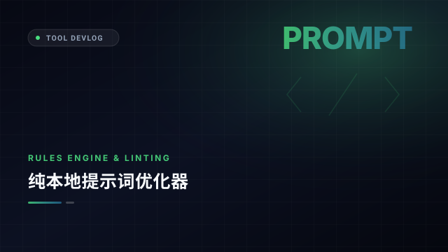

纯本地提示词优化器：零模型依赖的规则诊断与重组引擎
提示词的结构性缺陷无需依赖大模型二次推理。记录一套零依赖、纯本地单页的 JavaScript 规则诊断引擎：涵盖 10 项结构要素排查、6 组互斥矛盾识别、格式清洗与两级安全修复机制。

背景：结构性缺陷与确定性规则的解耦
日常调试提示词时，大量低效输出其实源于两类基础结构问题：一是要素残缺（如遗漏输出格式约束或角色边界），二是指令前后矛盾（如既要求详尽推导又限制极简输出），此外还常夹杂跨平台复制带入的不可见异常字符。这类问题属于确定性的结构规范范畴——若直接交给大模型重写，不仅响应慢，还容易引入语义偏移与冗余措辞；改用静态语法规则在本地直接做结构诊断，反而更快速、可控。
方案：纯本地单页做静态排查
工具采用纯前端单页架构，完全在浏览器本地通过文本匹配与结构规则完成静态扫描，核心包含四个模块：
- 10 项结构要素检查：逐一核对角色设定、核心指令动词、上下文边界、输出格式及少样本示例（Few-Shot）的完整性，并针对缺失项给出补充建议。
- 互斥冲突模式识别：内置 6 组典型语义矛盾词表（如“详细展开 vs 极简概述”、“仅输出结果 vs 包含完整推导”），检出冲突时即时报警。
- 多级格式清理与修复：划分安全级修复（自动补全 Markdown 闭合围栏、中英文混排空格规范化）与确认级修复（否定句转肯定引导、复合多动词拆解分步），提供可视化 Diff 供人工确认。
- 特定规则行级豁免：针对代码块或特有模板语法，支持在行尾声明
(po-ignore: ...)标签跳过指定规则检测。
核心难点与工程排障
- 字符相似度无法替代语义判断：早期曾尝试用编辑距离算法（Levenshtein，通过统计字符增删改次数衡量文本相似度）来识别重复指令；但在短句中，“A 段不超过 50 字”与“B 段不超过 60 字”仅相差两个字符，表达的却是不同的约束条件。由于纯字符规则难以区分“冗余重复”与“数值微调”，重复检测最终收敛为仅标记完全相同的文本行。
- 抽象词频统计容易产生误报：曾尝试通过抽象词密度评估指令空洞程度，但业务指令中特定专业概念往往包含大量抽象名词。空洞属于高阶语义范畴，单纯依赖词表匹配误报率高，最终果断剔除该规则。
- 隐藏字符与编码前置清洗：从聊天软件或富文本文档复制的文本常混有不可见的零宽空格或异常全角符号，容易干扰后续的正则分词与规则匹配，因此在正式扫描前需先统一完成字符标准化清洗。
结论
写提示词就像写代码，检查提示词也可以像 Linter 那样工作：在真正送进模型之前，先把缺漏的结构、互斥的指令和隐藏的乱码排查干净。规则是确定的，出结果快，用起来也省心。